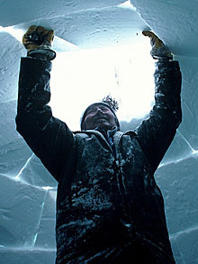

The Seven Wonders of Canada
The Canoe | The Igloo | Niagara Falls | Old Québec City | Pier 21, Halifax | Prairie Skies | The Rockies
The Igloo, Northern Canada
The igloo is an iconic structure recognized around the world. At once beautiful and strong, simple yet complex, the architecture of an igloo represents an ingenious use of nature's materials to suit human needs.
An igloo (Inuit language: iglu) or "snow house" is a shelter constructed from blocks of snow, generally in the form of a dome. Although igloos are mainly associated with the Inuit people of Canada's Arctic (as well as being found in Greenland), they are also part of the common Canadian identity. After all - even putting aside the occasional jokes about Canadians living in igloos – many children around the country have at some point tried making their own igloo-like structure in the winter.
It's been decades since igloos were a common form of housing for the Inuit, but traditionally, they ranged in size from small, one-person overnight shelters to large ceremonial complexes linked by smaller igloos.
The igloo is renowned for its spiral dome and ability to protect those inside from the cold. The dome's blocks are cut diagonally with a snow knife or rip saw, and gently slope inward toward the top of the roof. As for warmth, a well-built igloo with a soapstone lamp could bring the temperature up to around 0° C when it's –40° C outside. Add a little body heat to the equation, and you're perfectly comfortable.